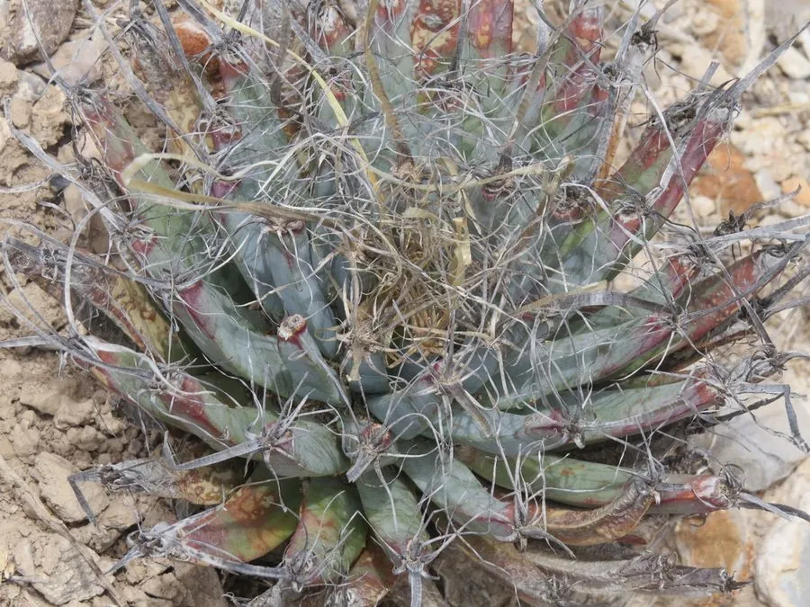

多肉植物 · 植物界
光山 Leuchtenbergia principis

仙人掌科光山属多年生肉质植物，疣突细长如叶、形似龙舌兰，顶部开黄色大花，是仙人掌科中形态奇特的单种属。
- 分类
- 门被子植物门纲木兰纲目石竹目科仙人掌科属光山属
- 栖息环境
- 原产墨西哥中部高原，喜光耐旱、通风良好
- 地理分布
- 原产墨西哥中部；中国各地作为观赏仙人掌栽培
- 保护级别
- CITES 附录Ⅱ；IUCN 暂无评估；栽培观赏植物
物种志
光山为仙人掌科光山属多年生肉质植物，具粗壮的肉质根，茎短，疣突细长呈叶状，长可达十至十五厘米，灰绿色，顶端簇生。刺座生于疣突顶端，刺细长、纸质，黄褐色。花生于疣突顶端，花冠漏斗状，黄色，花径可达五厘米，花期夏季；浆果球形，成熟时红色，种子黑色。
光山原产墨西哥中部高原，中国各地作为观赏仙人掌栽培。它喜光、耐旱，夏季高温时需适度遮阴；适宜疏松透气、排水良好的颗粒基质，忌积水和闷热。疣突细长如龙舌兰的叶片，整体形态介于仙人掌与龙舌兰之间，是仙人掌科中的单种属，分类上十分独特。生长缓慢，成年植株开花时黄花大而醒目。繁殖以播种为主。
形态与习性
- 株型疣突细长如叶，灰绿色
- 疣长10–15 cm，顶端簇生
- 花期夏季，花黄色、径约 5 cm
- 光照喜光，夏季适度遮阴
- 水分耐旱，忌积水
- 土壤疏松排水良好的颗粒土
- 主要用途仙人掌盆栽、标本栽培
趣味知识
- 光山的疣突细长如龙舌兰的叶片，因此英文名意为龙舌兰仙人掌。
- 光山属只有光山一种，是仙人掌科中的单种属，分类地位独特。
- 它把养分储存在粗壮的肉质根中，地上部分看似瘦弱却能开出大花。